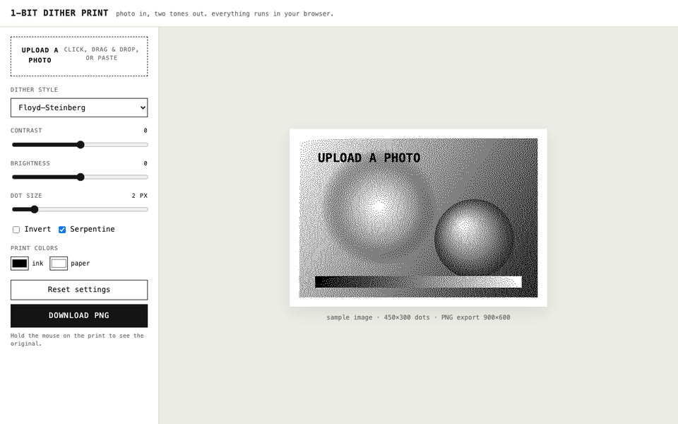

Ava Blue · things I asked Claude to build
Every page here was written by Claude in one go from a single ask. I don't fix its files; when something broke, the fixed copy is labelled. The prompt is under each one.

Cherry MX Red teardown
2026-11-17 · Claude Opus 5.5
An interactive teardown of a mechanical keyboard switch: press it, watch it fire at 2 mm of its 4, then take it apart part by part.
Claude's build (untouched)
The prompt
Build me an interactive teardown of a Cherry MX Red mechanical keyboard switch as a single index.html with no libraries or external files (canvas 2D or SVG). It should open up step by step: one button per part (housing top, stem, spring, contact leaves, housing bottom) that pulls that part out and labels it, plus a "press" view that pushes the key down and shows exactly where it fires. Use the real Cherry MX Red numbers, and put them in a panel that updates live from the same formulas that move the parts (key travel in mm, spring force, and whether the contacts are open or closed). Add an auto tour that walks through all of it in about 10 seconds. Read #t=<seconds> from the URL and draw that moment of the auto tour, deterministic (no wall clock, no randomness), so I can record it frame by frame.
The post on X →

Same prompt, three Claudes: photo → 1-bit print
2026-11-15 · Claude Haiku 5.5, Sonnet 5.5 and Opus 5.5
Upload any photo and get a dithered black-and-white print. Same ask to three models; Haiku's needed 5 more words ("drawn with 2 px dots").
Haiku 5.5 · Sonnet 5.5 · Opus 5.5 · Haiku 5.5 + "drawn with 2 px dots"
The prompt
make me a single index.html with no libraries or external files that turns any photo i upload into a 1-bit dithered print, with a choice of dither styles, a contrast slider, and a button to download the result as a png.
The post on X →

One-sentence 3D racer
2026-11-14 · Claude Opus 5.5
A neon car in a desert canyon at 2am, all 3D math by hand on a 2D canvas. It painted the road over its own car; deleting one line fixed it.
Claude's first try (untouched) · with the one-line fix
The prompt
make me a playable 3D endless runner as a single index.html with no libraries or external files: i'm driving a neon car through a desert canyon at 2am, steer with the arrow keys or A/D, dodge the rocks, show the score, and restart on space after a crash.
The post on X →